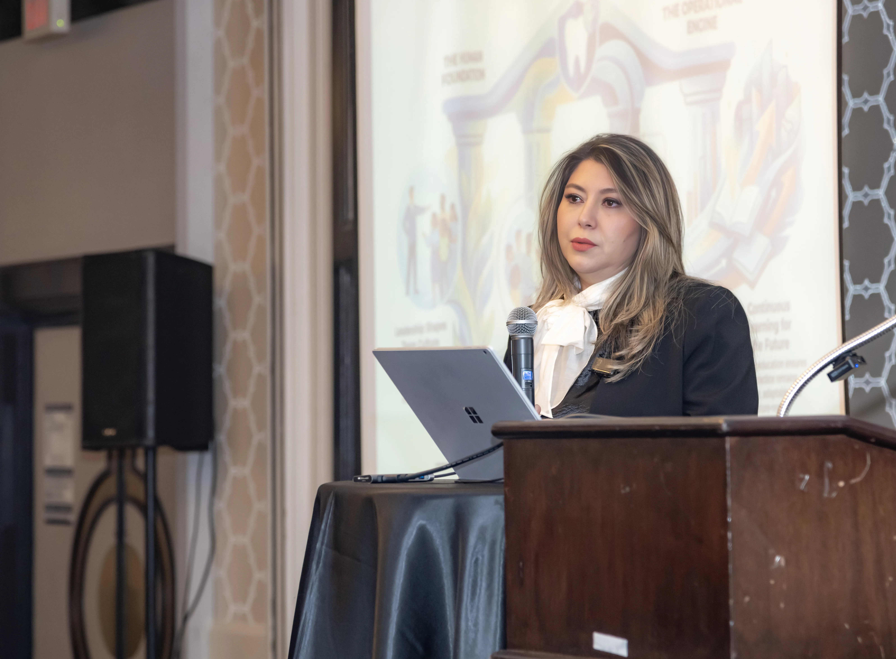

Leadership development for dental practices ready to grow with more clarity, stronger teams, and healthier operational structure.
I am a healthcare executive, leadership strategist, and culture and communication coach with more than a decade of experience leading clinical operations, driving organizational growth, and managing high-performing teams across complex healthcare environments.
My background includes leadership across DaVita, USC Kidney Center, UCLA-related hospital services, and major healthcare operations, with experience in multi-site performance, team development, financial oversight, operational improvement, and strategic growth.

Ph.D. — Management & Strategies of Organizations
MBA — Management
Foundation in Computer Science
DaVita — Clinical Operations Leadership
USC Kidney Center
UCLA-Related Hospital Services
10+ Years Multi-Site Healthcare Leadership
My academic background includes a Ph.D. in Management & Strategies of Organizations, an MBA in Management, and a foundation in Computer Science.
This blend of leadership, business, and operational strategy shapes the way I support dental practices today — connecting theory with real-world systems and execution.
Many practice owners carry far more than they should.
They are expected to lead people, solve problems, build systems, protect culture, and still stay focused on patients and growth. Many office managers are also expected to lead without having been properly developed for the role.
That is where strong leadership development becomes transformational.
My work is about closing that gap — giving practice owners and office managers the clarity, structure, and skills to lead their practices more effectively, with less friction and more confidence.
Phoenix Leadership stands for renewal, clarity, and growth.
It is about helping practices rise above repeated challenges, strengthen how they lead, and create a stronger future through intentional leadership, aligned teams, and smarter systems.
Rising above repeated challenges to build a stronger, more resilient practice from the inside out.
Creating the leadership structure and operational clarity that allows teams to perform at their best.
Supporting intentional, sustainable growth through aligned teams, smarter systems, and stronger leaders.
"Leadership shapes culture. Culture shapes performance. Performance shapes growth."
We help practices rise through leadership that is intentional, culture that is excellent, and systems that are built to last.
I would be happy to start with a conversation about your practice, your goals, and where leadership development can create the most impact.